| 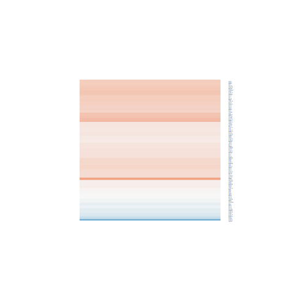 hsa03010 Ribosome Large Map Interpret Results | 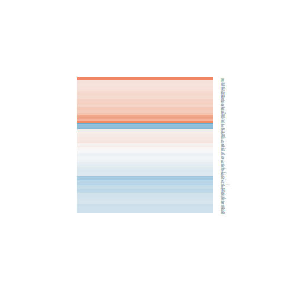 hsa04010 MAPK signaling pathway Large Map Interpret Results | hsa03040 Spliceosome Large Map Interpret Results | 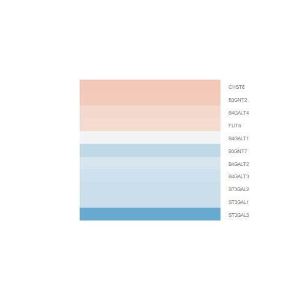 hsa00533 Glycosaminoglycan biosynthesis Large Map Interpret Results | 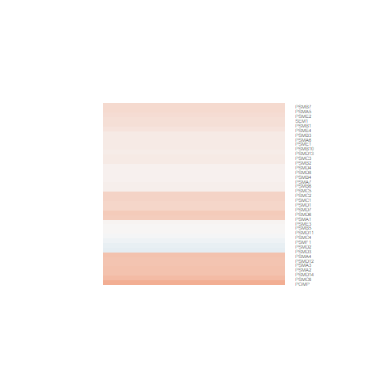 hsa03050 Proteasome Large Map Interpret Results |
hsa04110 Cell cycle Large Map Interpret Results | hsa04120 Ubiquitin mediated proteolysis Large Map Interpret Results | 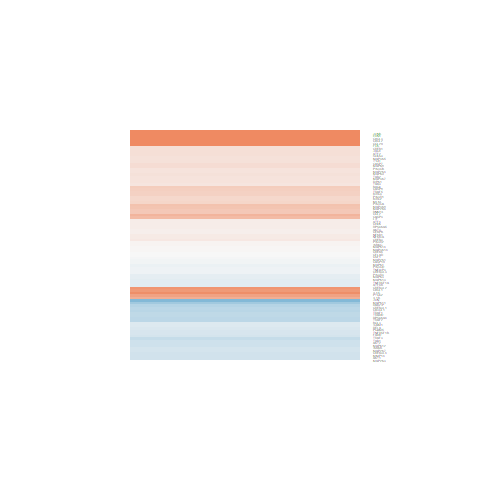 hsa04668 TNF signaling pathway Large Map Interpret Results | 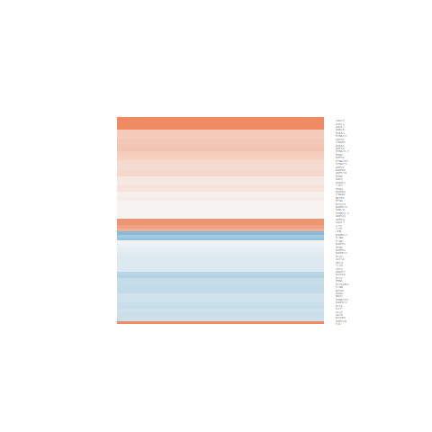 hsa05132 Salmonella infection Large Map Interpret Results | 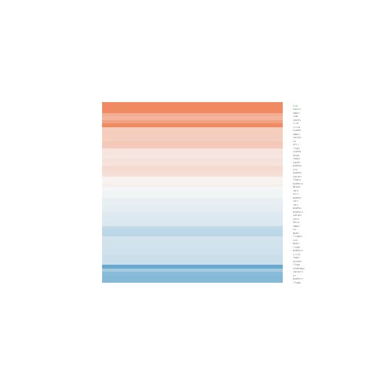 hsa05133 Pertussis Large Map Interpret Results |
hsa05161 Hepatitis B Large Map Interpret Results | 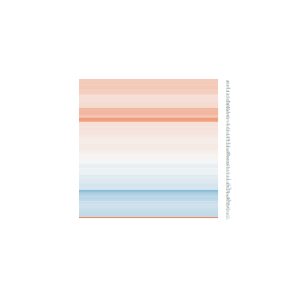 hsa05168 Herpes simplex infection Large Map Interpret Results | 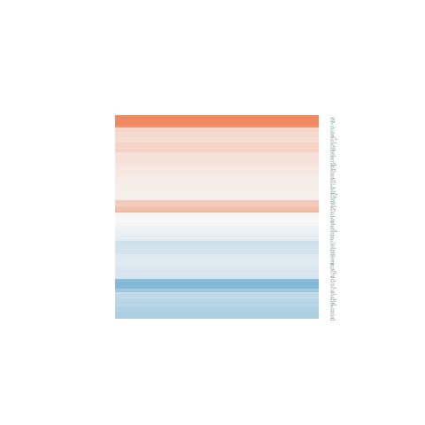 hsa05202 Transcriptional misregulation Large Map Interpret Results | 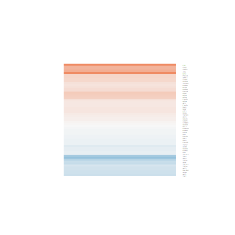 hsa05210 Colorectal cancer Large Map Interpret Results | 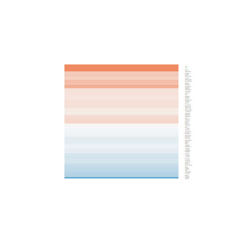 hsa04350 TGF-beta signaling pathway Large Map Interpret Results |
| 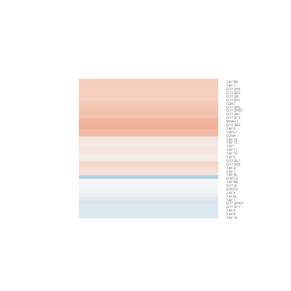 hsa03022 Basal transcription factors Large Map Interpret Results | 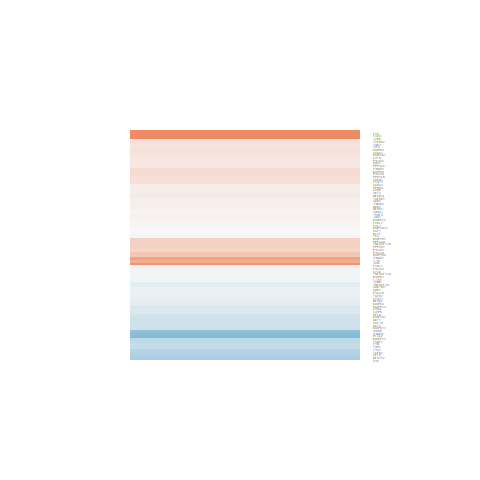 hsa04380 Osteoclast differentiation Large Map Interpret Results | 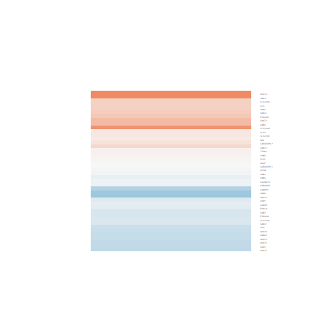 hsa04727 GABAergic synapse Large Map Interpret Results | 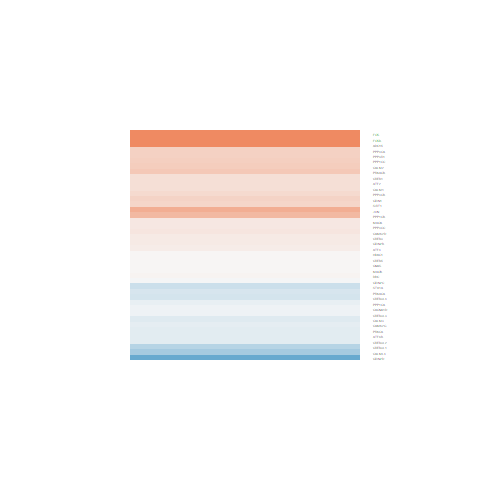 hsa05031 Amphetamine addiction Large Map Interpret Results | 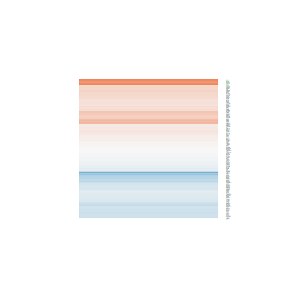 hsa05166 HTLV-I infection Large Map Interpret Results |
| 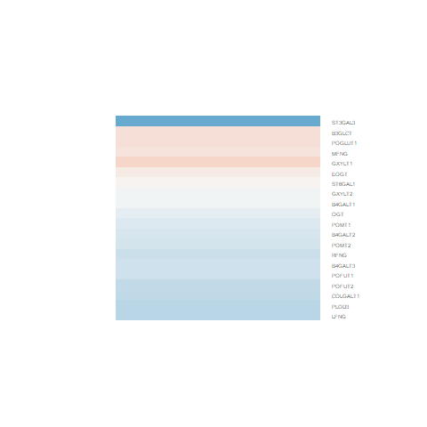 hsa00514 Other types of O-glycan biosyn Large Map Interpret Results | hsa04550 Signaling pathways regulating Large Map Interpret Results | 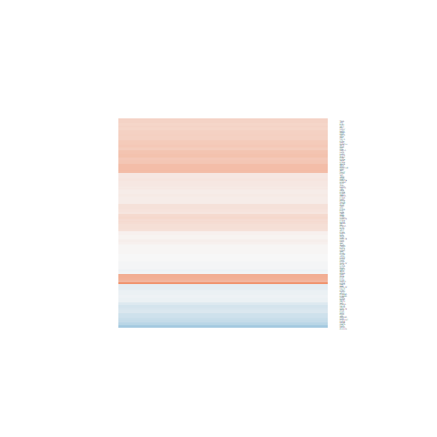 hsa03013 RNA transport Large Map Interpret Results | 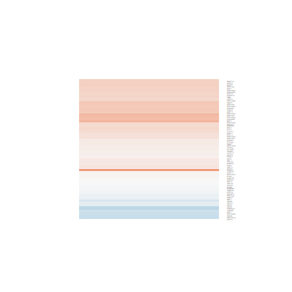 hsa03015 mRNA surveillance pathway Large Map Interpret Results | 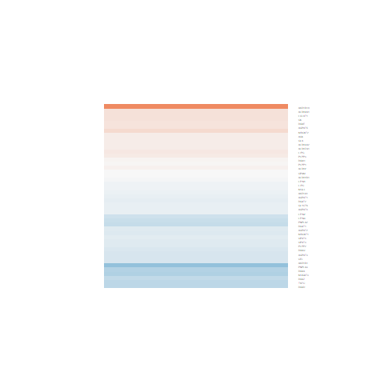 hsa00561 Glycerolipid metabolism Large Map Interpret Results |
| 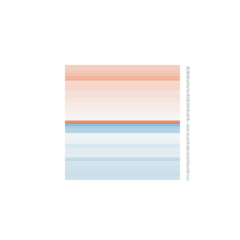 hsa04390 Hippo signaling pathway Large Map Interpret Results | 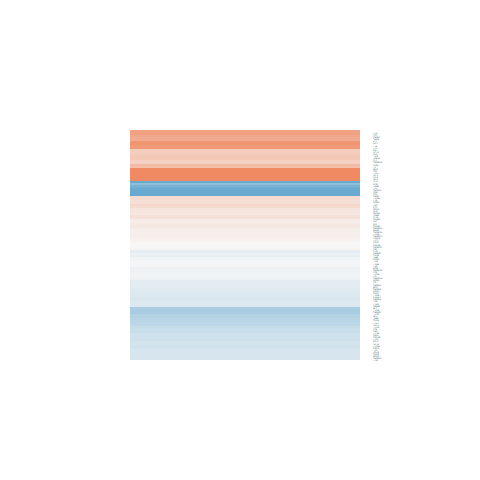 hsa04060 Cytokine-cytokine receptor int Large Map Interpret Results | 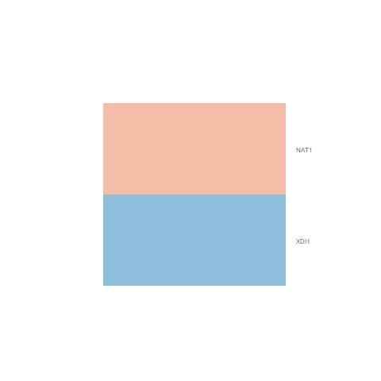 hsa00232 Caffeine metabolism Large Map Interpret Results | 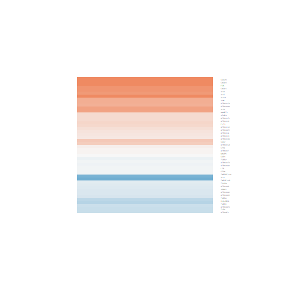 hsa05323 Rheumatoid arthritis Large Map Interpret Results | 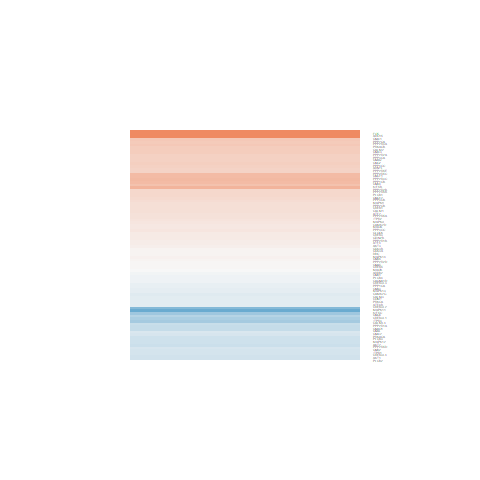 hsa04728 Dopaminergic synapse Large Map Interpret Results |
hsa04914 Progesterone-mediated oocyte m Large Map Interpret Results | hsa05012 Parkinson's disease Large Map Interpret Results | 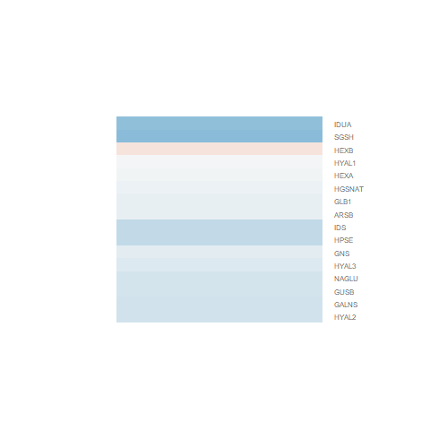 hsa00531 Glycosaminoglycan degradation Large Map Interpret Results | 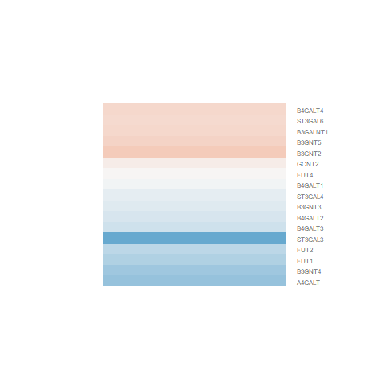 hsa00601 Glycosphingolipid biosynthesis Large Map Interpret Results | 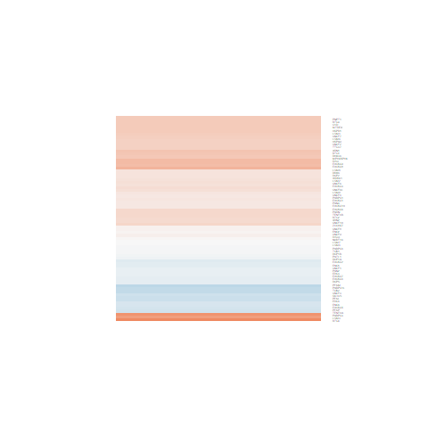 hsa03018 RNA degradation Large Map Interpret Results |